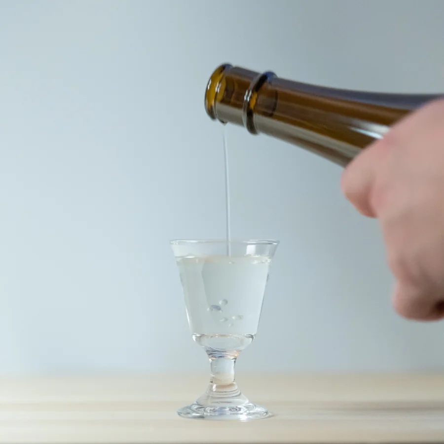
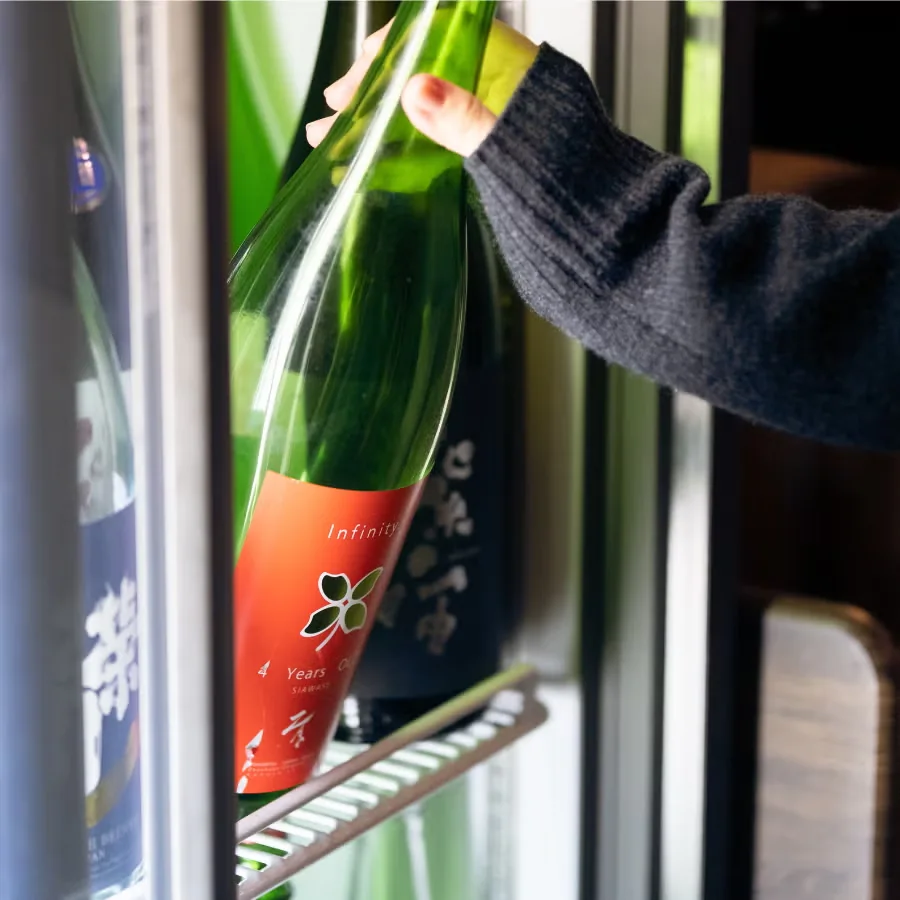
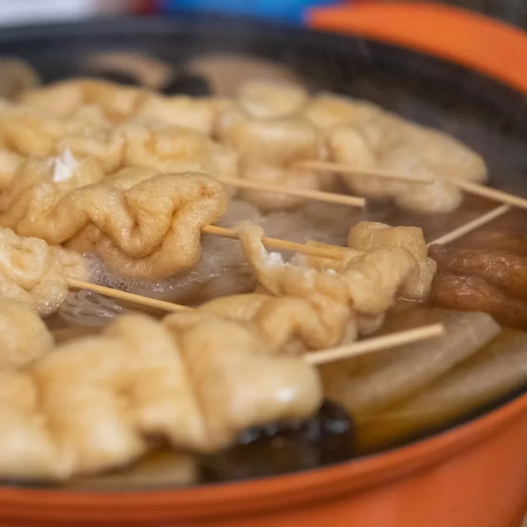
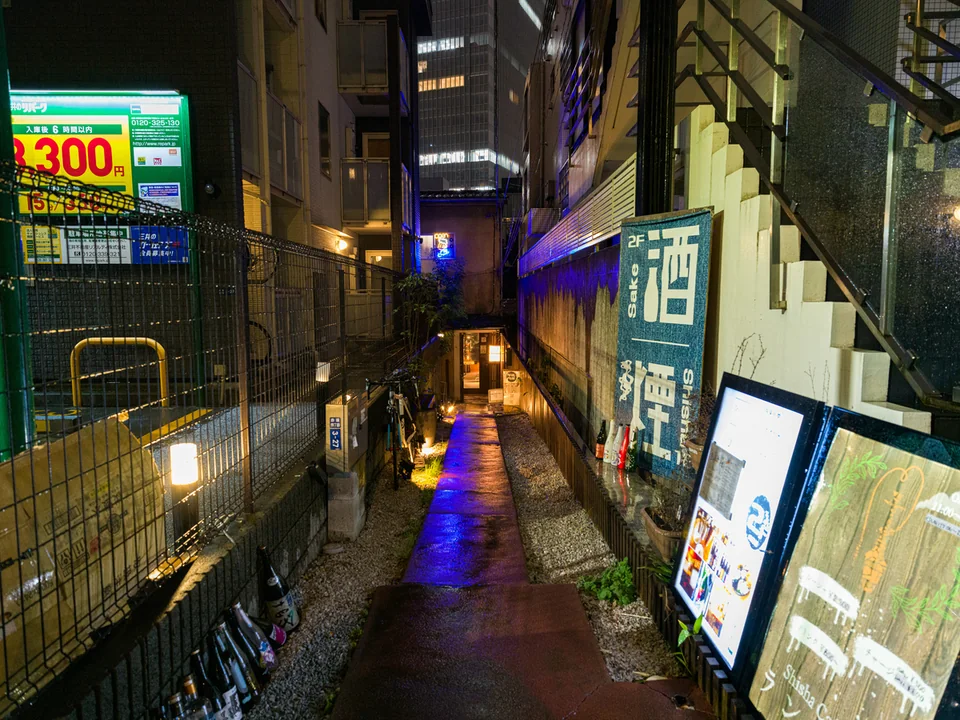
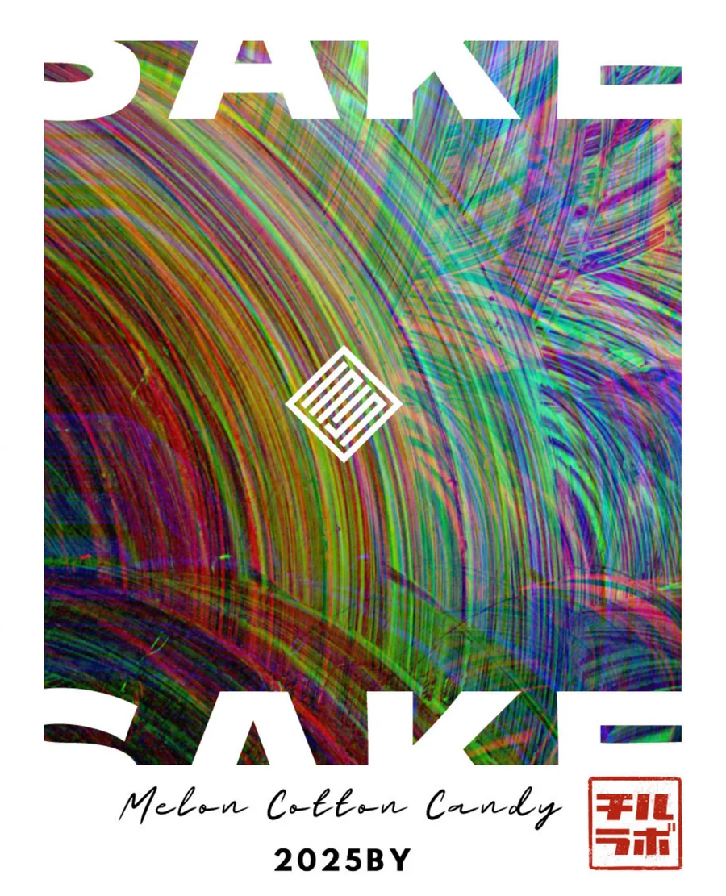

2時間飲み比べコース
¥6,6001名様・税込
2〜10名様 · 月〜金 · 2日前までに予約
料理の内容を見る
- 小鉢おまかせ盛り！おつまみプレート
- ベーコンと玉ねぎのポテトサラダ
- 炙り合鴨ロース
追加フードはコース終了30分前まで。おでん・〆は提供にお時間を頂くため、45分前までにご注文ください。お時間終了後は、次のお客様のため速やかなご退店をお願いいたします。

ひと口ずつ、
好きになる。
知らない銘柄も、好きな味から。

TASTE / COMPARE / ASK
飲んで、話して、少しずつ比べる。
好きな味を聞かせてください。気になった一本を少しずつ。知らない銘柄も、ここでは会話のきっかけです。
初心者・お一人様歓迎 / English welcome
TAKE YOUR TIME
好きな味を、好きなペースで。
お一人様・税込。時間経過により自動延長となります。
冷酒・常温・熱燗。焼酎・ビール・ソフトドリンクも含みます。
飲み比べ放題は席料なし。単品注文のみの場合は席料お一人様550円（税込）。料理は別注文です。
A BITE WITH YOUR SAKE
湯気の向こうで、またひと口。
おつまみをつまみながら、ゆっくりどうぞ。
おでんは月〜金に提供しています。
フードのお持ち込みはご遠慮ください。

SAKE & FOOD
料理も楽しみたい日は、こちらを。
¥6,6001名様・税込
2〜10名様 · 月〜金 · 2日前までに予約
追加フードはコース終了30分前まで。おでん・〆は提供にお時間を頂くため、45分前までにご注文ください。お時間終了後は、次のお客様のため速やかなご退店をお願いいたします。
¥8,8001名様・税込
2〜10名様 · 月〜金 · 2日前までに予約
料理は人数分を大皿で提供します。10名様のご予約はお電話でお問い合わせください。
コースの詳細・予約TableCheck
COME ON IN

赤坂駅・赤坂見附駅から徒歩約5分
Google Mapsで道順を見る祝日は基本営業。臨時休業・営業時間の変更はInstagram・Google Mapsをご確認ください。
080-8700-8528現金・クレジットカード・PayPay / 店内禁煙（屋外喫煙スペースあり）
チルラボ赤坂の予約をお願いします。日付：［月／日］、時間：［時：分］、人数：［名］。よろしくお願いします。
お席があれば当日のご来店も歓迎。金曜日の3名様以上は予約がおすすめです。16時以降の当日予約・10名様以上は、お電話でお問い合わせください。料理付きコースは2日前までの予約制です。
遅れる場合はお電話ください。ご予約時刻から20分を過ぎて未到着の場合、キャンセルとなることがあります。お席の指定はご希望に添えない場合があります。
もちろんです。普段好きな飲みものや味から、一緒に探しましょう。初心者の方、お一人様も歓迎しています。
最初の1時間はお一人様3,300円（税込）。その後は1時間ごとに1,100円（税込）で自動延長です。通常の飲み比べ料金に料理は含まれません。
飲み比べ放題には席料がかかりません。単品注文のみの場合は、お一人様550円（税込）の席料を頂戴します。
英語対応スタッフがおり、一部メニューにも英語表記があります。気軽にお声がけください。
お席があればご案内できます。金曜日の3名様以上は、ご予約をおすすめします。16時以降の当日予約はお電話でお問い合わせください。
2時間6,600円、3時間8,800円（各お一人様・税込）の料理付きコースがあります。2〜10名様、月〜金、2日前までのご予約制です。10名様はお電話でお問い合わせください。
料理付きコースを見る ↓飲み比べ放題には、焼酎・ビール・ソフトドリンクも含まれます。日本酒は冷酒・常温・熱燗を楽しめます。
フードの持ち込みはご遠慮いただいています。店内のおつまみをお楽しみください。おでんは月〜金に提供しています。
赤坂駅・赤坂見附駅から、それぞれ徒歩約5分。東京都港区赤坂4-3-27の2Fです。路地の写真とGoogle Mapsをご確認ください。
現金・クレジットカード・PayPayをご利用いただけます。
店内は禁煙です。屋外に喫煙スペースがあります。
1FのBottle Shopは準備中です。営業開始や販売内容は、決まり次第ご案内します。

FROM FIELD TO GLASS
自分たちで田植え・稲刈りをした米を使う、次の一本。
SAKE ART TOKYOの3番目のクラフト酒は、そこから始まります。
一本の酒ができるまでの記録は、これから。
FIELD → RICE → FERMENTATION → GLASS → BOTTLE → STORY
FERMENTATION PLAYGROUND
香りのこと。米のこと。
グラスの向こうを、ちょっと探検。
FROM SCREEN TO GLASS
赤坂の日本酒バー / 2F / お一人様も、はじめましても。